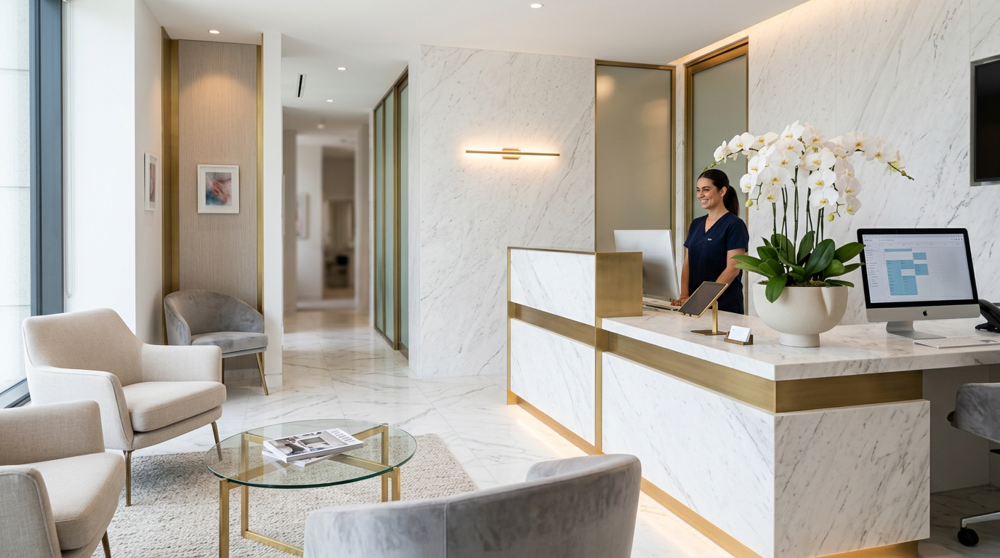

Our Philosophy
루메르 클리닉은 피부의 문제를 단순히 제거하는 것이 아니라, 피부가 본래 가진 건강한 균형을 되찾도록 돕는 것을 목표로 합니다.
과잉 시술을 지양하고, 환자의 피부 상태와 라이프스타일을 종합적으로 고려한 최소 침습 프로토콜을 설계합니다.
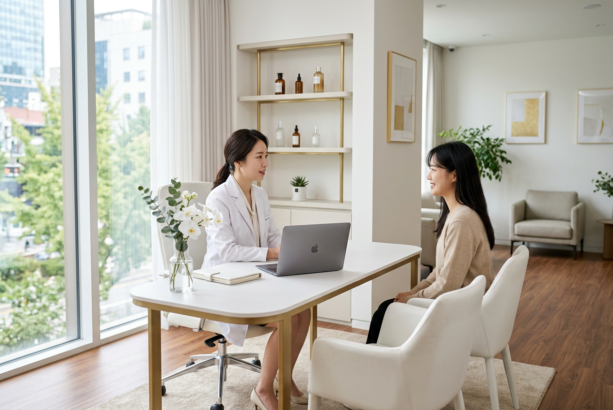
"피부가 스스로 회복하는 힘을 믿습니다."
Medical Director
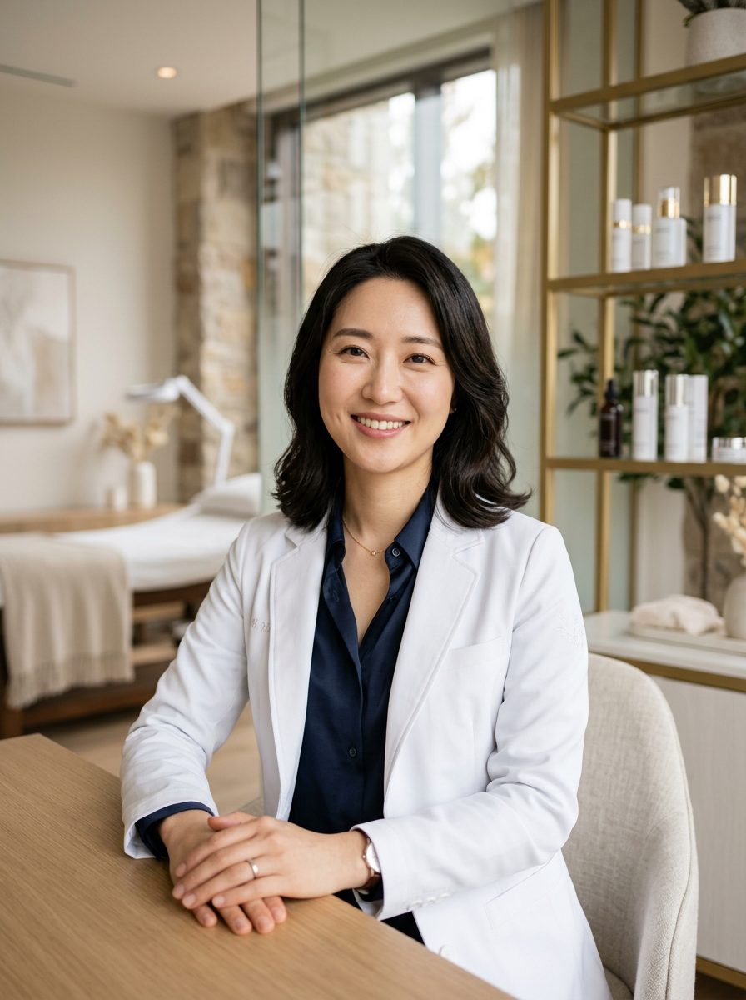
Board-Certified Dermatologist
"모든 피부는 고유한 이야기를 가지고 있습니다. 저는 그 이야기를 먼저 듣고, 피부가 원래 가야 할 방향으로 안내하는 역할을 합니다."
15년간 3만 건 이상의 피부 시술 경험을 바탕으로, 환자 맞춤형 프로토콜을 설계합니다. 과잉 시술 없이, 필요한 만큼만 정확하게.
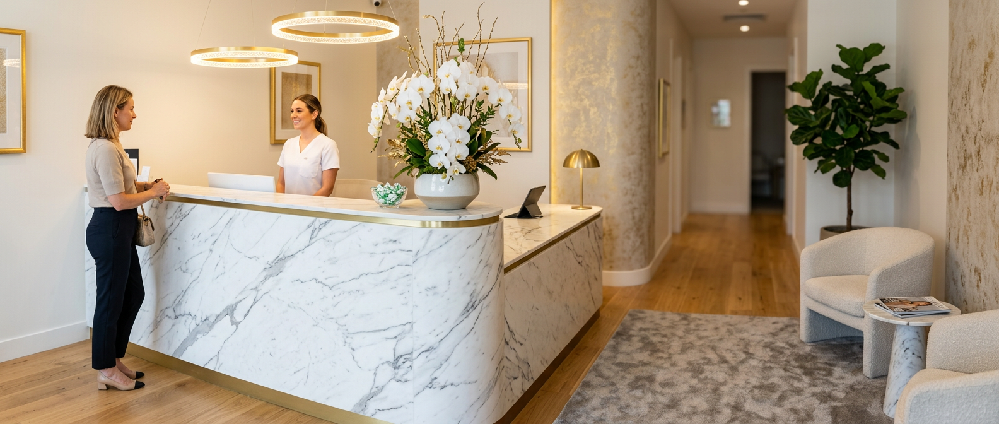
Our Space
화이트 마블과 간접 조명으로 설계된 프라이빗 시술실. 모든 공간은 환자의 심리적 안정을 최우선으로 고려했습니다.
Treatment Menu
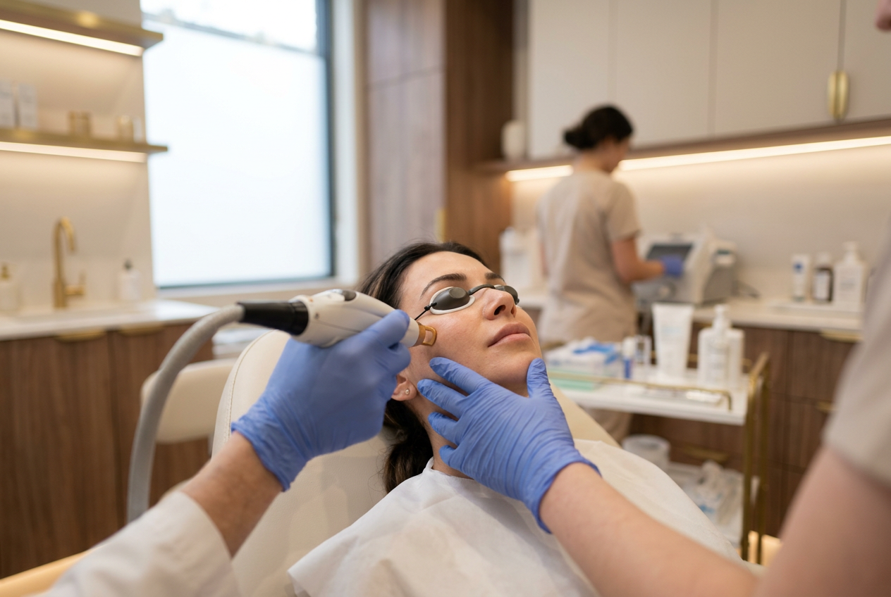
Laser & Tone
멜라닌 색소를 정밀 타겟팅하여 균일하고 밝은 피부 톤을 완성합니다.
₩150,000 — ₩300,000
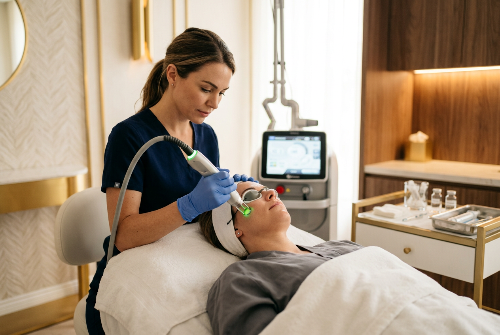
Anti-Aging
₩200,000 — ₩500,000
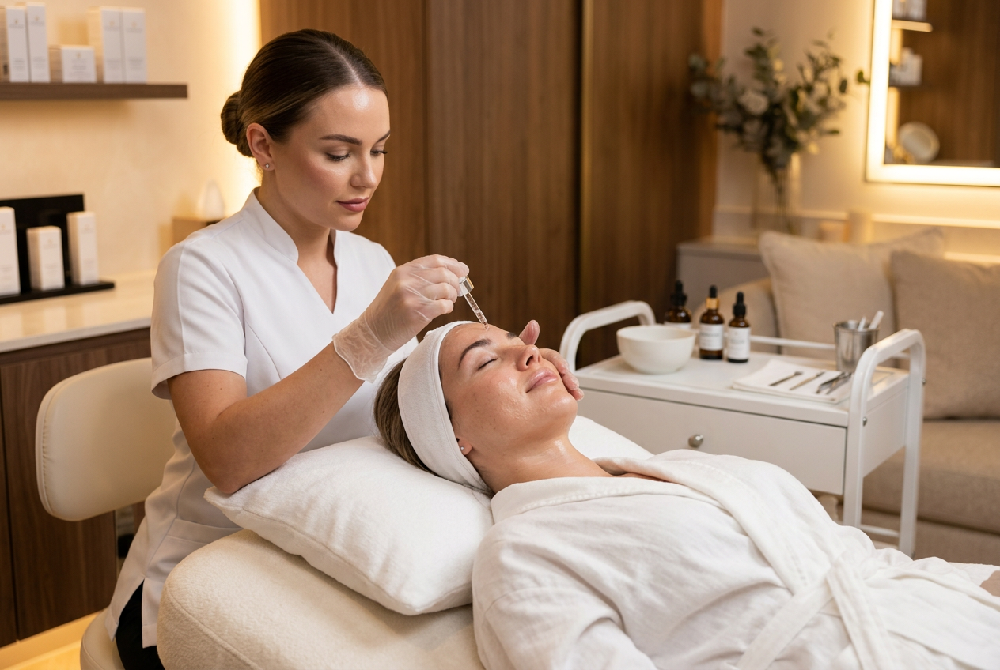
Barrier Care
₩80,000~
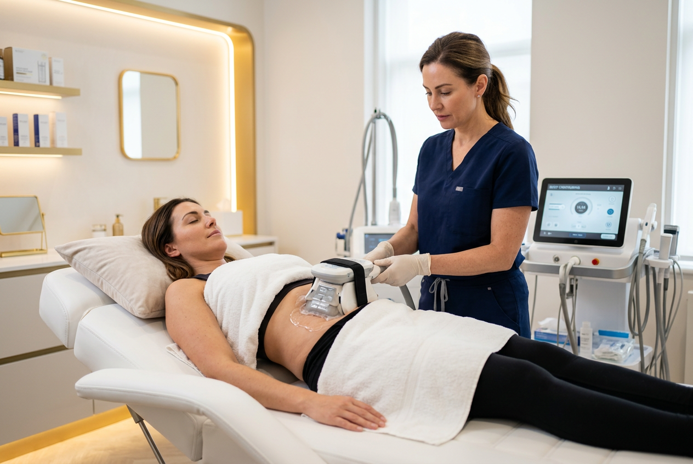
Body
상담 후 안내
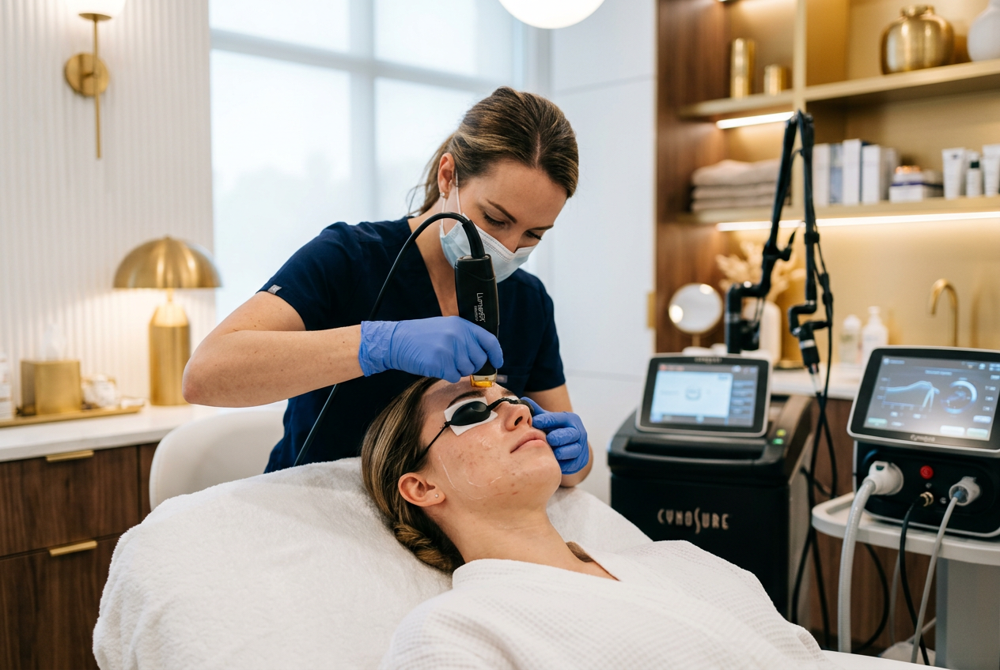
Premium Program
레이저 토닝 + 안티에이징 + 피부장벽 강화를 결합한 종합 프로그램. 3개월 주기로 피부의 전반적인 건강을 관리합니다.
Treatment Process
전화 또는 온라인으로 피부 고민을 사전 공유하고, 적합한 진료 시간을 안내받습니다.
VISIA 피부 분석기로 수분, 탄력, 색소, 모공 상태를 정밀 측정합니다.
분석 결과를 바탕으로 원장이 직접 시술 플랜을 설계하고 환자와 상의합니다.
최신 장비와 검증된 프로토콜로 안전하고 정확한 시술을 시행합니다.
시술 후 경과 체크와 홈케어 가이드를 제공하며, 장기적인 피부 건강을 관리합니다.
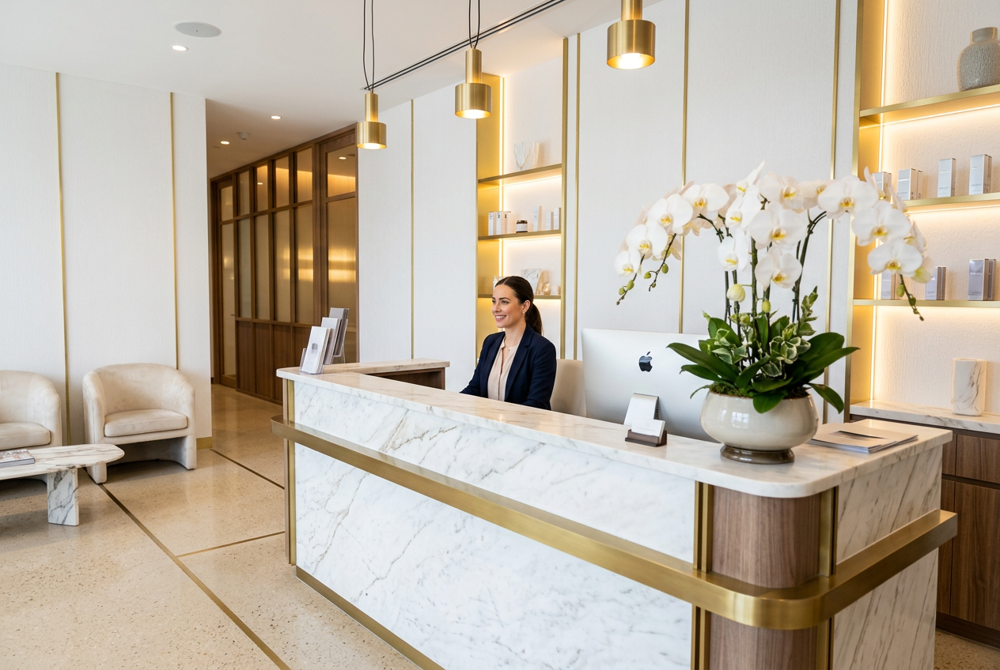
15+
년 진료 경력
3만+
시술 케이스
98%
환자 만족도
Patient Results
"시술했다는 걸 아무도 모르더라고요. 그냥 피부가 좋아졌다는 이야기만 들어요."
— 김○○, 30대
"원장님이 부작용과 회복 기간을 솔직하게 설명해주셔서 더 신뢰가 갔어요."
— 이○○, 40대
"시술 후에도 꼼꼼하게 관리해주셔서 1년째 꾸준히 다니고 있어요."
— 박○○, 20대
FAQ
레이저 토닝은 비침습 시술로, 시술 직후 일상생활이 가능합니다. 약간의 홍조가 1-2일간 지속될 수 있으며, 자외선 차단을 철저히 해주시면 됩니다.
FDA 승인 장비만을 사용하며, 시술 전 충분한 상담을 통해 환자 상태에 맞는 안전한 세기로 진행합니다. 일시적 붓기나 멍이 발생할 수 있으나 3-5일 내 자연스럽게 소실됩니다.
토탈 스킨 케어 프로그램은 3개월(6회) 기준이며, 레이저 토닝 + 안티에이징 + 피부장벽 강화를 병행합니다. 개별 시술 대비 20-30% 할인된 가격으로 이용 가능합니다.
노메이크업 상태로 방문해 주시면 좋습니다. 클렌징 서비스도 제공하지만, 정확한 피부 분석을 위해 맨 얼굴 상태가 이상적입니다. 복용 중인 약이 있다면 목록을 가져와 주세요.
예약일 전일 18시까지 전화 또는 카카오톡으로 변경·취소가 가능합니다. 당일 취소 시에는 예약금이 차감될 수 있으니 양해 부탁드립니다.
건물 지하 주차장 이용이 가능하며, 시술 환자분께는 2시간 무료 주차를 제공해 드립니다. 신사역 4번 출구에서 도보 3분 거리입니다.
Book Consultation
오시는 길
서울특별시 강남구 도산대로 128
루메르빌딩 3-5F
신사역 4번 출구 도보 3분
전화 예약
02-543-7890
진료 시간
월-금 10:00 — 19:00
토요일 10:00 — 16:00
일·공휴일 휴진
이메일 문의
info@lumereclinic.co.kr
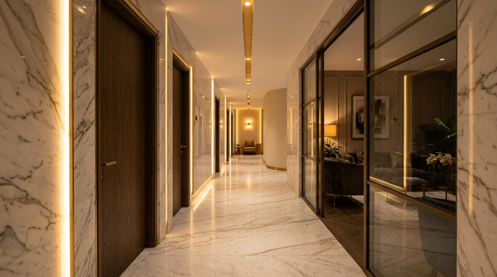